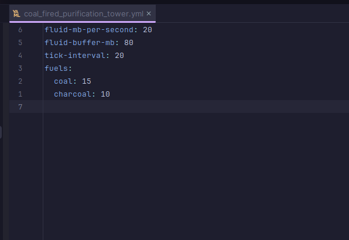

What is Pylon?
Pylon is an upcoming Minecraft Java technology plugin that will hugely expand vanilla gameplay with new content: electricity, diesel machines, new fluids and fluid pipes, logistics, and much, much more!
Join us on Discord FInd us on GitHub
Keep reading to find out more.
 Where are we at?
Where are we at?
| Expected time of completion | Event |
|---|---|
| February 2025 | Open alpha testing (likely hosted on MetaMechanists - my own server) begins. |
| April 2025 | Electricity fully implemented |
| Mid 2026 | Pylon officially released |
 Pylon's features
Pylon's features
| Status | Feature |
|---|---|
 |
Manual machines (mixing pot, grindstone, magic altar, hammer, and much more!) |
|
Hydraulic machines (early-game automation) |
|
Fluid pipes & new fluids |
|
Smelting & alloying system |
|
Multiblocks |
|
Research system (unlock new items with research points) |
|
Per-player language support |
|
Comprehensive and user-friendly in-game guide |
|
Extensive server customisation options (including per-machine settings and customisable recipes) |
|
First-class addon support (even all of Pylon's base content is added using an addon!) |
 |
Performance tuning options (limit the number of blocks per chunk/player, configure tick rates, etc) |
|
First-class texture pack support + 'official' texture pack (including blocks) |
|
Diesel machines (mid-game automation) |
|
Cargo system (automatically move items from A to B) |
 |
Electric machines (end-game automation) |
|
AE2-style endgame logistics system |
|
Builtin profiler for determining what's causing the most lag |
|
Bedrock support (via Geyser) |
 Gallery
Gallery
 |
|
|  | |
 Meet the team
Meet the team
| Role | Member | Bio |
|---|---|---|
| Lead Developer |  Seggan Seggan |
A veteran Slimefun addon developer (SlimefunWarfare, SFCalc, Galactifun), with a impressive contribution record for SF addons, Paper, and Slimefun. Seggan is responsible for many core Pylon systems, including translation, WAILA, researches, the smeltery, the recipe system, and more. |
| Lead Developer |  Ohm Ohm |
New to plugin development, but has done a fantastic job getting up to speed and adding lots of base content, like talismans and the beheading sword, as well as a lot of various smaller technical changes & bug fixes. |
| Lead Developer |  Idra Idra |
Owner of a Slimefun server for 5 years & Quaptics developer. I have developed many of the core systems including the Pylon guide, fluid system, hydraulics, cargo, diesel, automated tests, block storage, and more |
| Developer |  Vaan Vaan |
Previously headed a geopolitics server and has been doing a lot of valuable work on the 'smaller stuff' - resolving issues, fixing bugs, adding polishing, making technical changes, and lots more. |
| Developer | Justin |
Head developer on my server for 3 years and works professionally in the Minecraft space. He has done the majority of the texture pack support side of Pylon, and other various smaller refinements. |
| Artist |  Pandicka Pandicka |
A talented texture pack artist who worked on Slimefun texture packs, and has created the majority of the Pylon resource pack. |
| Contributor |  Balugaq Balugaq |
Former Slimefun addon developer (JustEnoughGuide, SlimefunTimeIt, MSUA, AdvancedBan, and more) who has contributed to Pylon (primarily the recipe ingredient calculation system) and also has already written two addons. |
| Contributor | Blueb |
Has run a Slimefun server (Orchid) for several years and has added some neat content like the elevator. |
| Contributor | Ybw0014 |
Former Slimefun addon developer who ran the Slimefun community. Helped with some of the Pylon docs. |
 For server admins
For server admins
Performance
 Even huge multiblocks will have almost zero performance impact compared to a normal Pylon block
Even huge multiblocks will have almost zero performance impact compared to a normal Pylon block- Most of Pylon will eventually run asynchronously
- Performance is literally built into Pylon's design - systems like fluid pipes and cargo were designed from the ground up in the most performant way possible
- You will be able to limit the number of each type of block per player or per chunk
- Pylon will have many more performance options, such as making fluid pipes tick less often, or reducing tick rates of individual types of machines
- We plan to add a purpose-built profiler so you can see exactly what blocks & items are using the most CPU or memory
Stability
- Easily disable any problematic blocks or items
- Pylon will refuse to start if it detects any configuration issues
- Blocks that throw errors will be safely unloaded
- Removing addons is safe, with all the data kept intact and restored if the addon is re-added
- Pylon data is stored in the world data itself - no need to keep extra backups
Customisation
- The unlocks and costs of each research are configurable
- All recipes are configurable
- Most blocks and items have settings determining their tick rate, speed, diesel usage, etc
 For developers
For developers
Addon development
- Pylon has first-class addon support; all the base content is added using an addon!
- Pylon supports addons written in Kotlin
- Blocks, items, recipes, guide pages, fluids, and entities are all easy and intuitive to add
- Pylon will have extensive high-level documentation on all the features it has to offer
Currently, addon development is not supported due to how rapidly Pylon is still changing.
Examples
See the following code to get a feel for how Pylon works:
 Q&A
Q&A
| Question | Answer |
|---|---|
| How do I install Pylon? | Read the installation guide at https://pylonmc.github.io/installation/installing-pylon/. Beware that Pylon is still experimental and you should not run it outside of an expendable test server. |
| Will Pylon support Slimefun addons? | No. Migrating from Slimefun to Pylon is non-trivial, and we advise addon developers to rewrite their addons entirely to better suit Pylon's progression and style rather than attempting to migrate them 1-to-1. |
| What versions will Pylon support? | We plan to keep each Pylon version compatible with the latest version of Minecraft at the time. To make it easier and faster for us to update, each version of Pylon will only support one version of Minecraft. This means you will need to use older versions of Pylon for older versions of Minecraft. Critical fixes will be backported. |
| What server software can Pylon run on? | Paper or paper forks only. Folia support may come later down the line. |
| Will Pylon support bedrock (via Geyser)? | Eventually, yes, but it is not a high priority and will be one of the last things added. Geyser is very hard for a project like this to support and there will be some jank. |
| When will Pylon be ready? | See the 'Provisional Timeline' section above |
If you have a different question, drop a message on Discord and we'll be happy to answer.